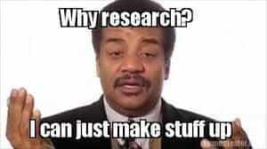

Michael is the author of Staying Married in a Degenerate Age. Follow him on Twitter or Facebook. You can read more of his writing at Honor and Daring.


Earlier this week I was walking through JFK airport when I found this curious, handwritten document, obviously dropped by another passenger. The document had no names on it, but I can only assume that a high-ranking general in social justice army was the author. I reproduce it below without modification except for the pictures, which I added as I felt they helped illustrate the concepts in the document.
***
Back in the day before there were iPhones, there used to be this list of seven deadly “sins” of things that people were supposed to avoid. Of course, people who lived before us were stupid so their list of the seven deadly sins is almost completely wrong.
While the old list of sins is wrong, I do like the easy-to-remember format, so I created a new list of sins that you should avoid. I’ll share those later, but first, let’s review the outdated list.
Here is the old list. As you can see, most of these are not sins at all. In fact, most of these “sins” are things that people should be strongly encouraged to do.
Pride, or hubris, was what the ancients thought was the greatest sin as it was the sin of the devil.
Today, we call this “self-esteem” and you can never have too much of it. Even if a person is indolent and has no achievements to his name, he is still a special snowflake who should hold his head up high with great self-esteem!
Why was this ever a sin? Now, everything is permitted.
Everyone should be encouraged to be as promiscuous as a chimpanzee, especially women. Men should be encouraged to use porn. It keeps them occupied so that they don’t recognize that their rights are being eroded.
Healthy at any size
The old meaning of gluttony was overindulgence. It was usually associated with food, but it could really be taking anything to an unhealthy extreme.
Gluttony is still somewhat applicable depending on who you are. Women are incapable of being gluttons, because they are healthy at any weight. However, men who eat butter or bacon are gluttons. Encourage them to eat more tofu because it kills their testosterone. The less masculine they are, the easier they are to control.
Avarice, or greed, is a rapacious desire for riches. This sin is still in effect. People who want to pay lower taxes are guilty of the sin of avarice.
Sloth from The Goonies.
Sloth is a physical or spiritual laziness.
This is a difficult topic to summarize, but in general, we want to continue the policy of working the male undesirables until they drop dead. For more details, consult The Theory and Practice of Oligarchical Collectivism.
Wrath is an uncontrollable anger. Wrath can be good or bad. An example of a good, wholesome wrath is opprobrium poured out upon the Duggar family after the molestation scandal.
Economists with Asperger’s Syndrome have figured out that envy is actually a good thing because it drives our wonderful consumerist society. Kim Kardashian has a Porsche, so you should have one too. We want to encourage the proles to keep buying products that they don’t need so that we continue to get richer.
Here is new list of Seven Deadly Sins. We won’t call it that of course, but it serves as a good mnemonic device. This is a work in progress, but I think you’ll get the general gist from what follows:
Harry Reid, who said that Obama, could be successful because of his “light-skinned” appearance and his ability to speak “with no Negro dialect, unless he wanted to have one,” is not a racist because he is a progressive.
If you judge a man by his character and not the color of his skin, you are a racist.
Only whites can be racist. Just as type-O blood is the universal donor, whites are the universal oppressor.
However, whites can be cleansed of their inherent racist nature by reading Slate, Rolling Stone, and the New York Times, and by regularly watching the Daily Show and MSNBC. Also, they should be sure to vote for the correct political candidates.
Healthy at any size feminist Andrea Dworkin: “Only when manhood is dead — and it will perish when ravaged femininity no longer sustains it — only then will we know what it is to be free.”
A misogynist is a person who believes in antiquated, traditional sex roles.
As enlightened, modern individuals, we know that all heterosexual sex in our patriarchal society is coercive and degrading to women, and sexual intercourse, by its very nature, makes women inferior and forces them into submission. In other words, all heterosexual sex is rape.
Misogynists reject this obvious truth, and consequently, they must be eradicated.

A homophobe is a person who doesn’t care what two consenting adults do in the privacy of their home, but who feels that marriage should be between one man and one woman.

Science consists of two great, unquestionable dogmas. If you deny either of these dogmas, or even question them, you are a science denier. The first great dogma is that there is no God. Believing in a sky god is a form of retrograde behavior that can lead to other sins such as misogyny or homophobia.
But the god of the Muslims is real because we are scared of those guys and hope they don’t hurt us.
The second great dogma is anthropogenic global warming (AGW). The correct solution to AGW is to only permit elites such as ourselves and Al Gore to fly in private jets. Some insolent people have the audacity to ask how AGW will be affected by the earth’s natural climactic cycles. These people are science deniers and should be attacked as enemies of the people.
People should always feel good about themselves unless they are retrograde persons who violate one of the new deadly sins.
Ugly people should be told that they are beautiful. Mentally slow people should be praised for their sharp intellect. If a man says he is a woman, call him Caitlyn. If Instagram girls fly to Dubai to have sex with Arab sheiks, men should be encouraged to play Captain Save-a-hoe and marry them after they hit the wall. [Editor’s Note: I was shocked by the author’s political incorrectness in the preceding paragraph.]
This deadly sin is one of the most powerful tactics we have in our arsenal to compel society to accept our social engineering changes.
A small number of men have started to try to roll back the glorious progress of feminism in order to try to reestablish antiquated patriarchal forms. If these men are permitted to reproduce and raise traditionally-minded children, it could result in a demographic nightmare for our social justice project. Science forbid!
However, if we can convince men that masculinity consists solely of growing a handle bar mustache, drinking bourbon, and smoking a pipe, then this movement might serve as another distraction to keep men from the next deadly sin—thinking.
For decades now, we have done an outstanding job of persuading the public that they were daring free-thinkers all the while they were completely conforming to our indoctrination.
But now, a dangerous new trend has emerged where men are starting to question the very foundations upon which our society is built. These thought criminals are reading the old books and questioning things such as equality. They are even debating which form of government is best.
We are starting to see the glimmerings of independent thinking. This trend must be stopped at all costs. Fortunately, this is only a tiny group of men and we will soon figure out a way to divide them so that they do not gain critical mass.
 If you like this article and are concerned about the future of the Western world, check out Roosh's book Free Speech Isn't Free. It gives an inside look to how the globalist establishment is attempting to marginalize masculine men with a leftist agenda that promotes censorship, feminism, and sterility. It also shares key knowledge and tools that you can use to defend yourself against social justice attacks. Click here to learn more about the book. Your support will help maintain our operation.
If you like this article and are concerned about the future of the Western world, check out Roosh's book Free Speech Isn't Free. It gives an inside look to how the globalist establishment is attempting to marginalize masculine men with a leftist agenda that promotes censorship, feminism, and sterility. It also shares key knowledge and tools that you can use to defend yourself against social justice attacks. Click here to learn more about the book. Your support will help maintain our operation.
***
The document abruptly ends there. While it might be a ruse, I thought it would be prudent to share with you as it does contain a few valid insights into the mind of a rank-and-file social justice warrior.
Read More: How Social Justice Warriors Miss The Mark